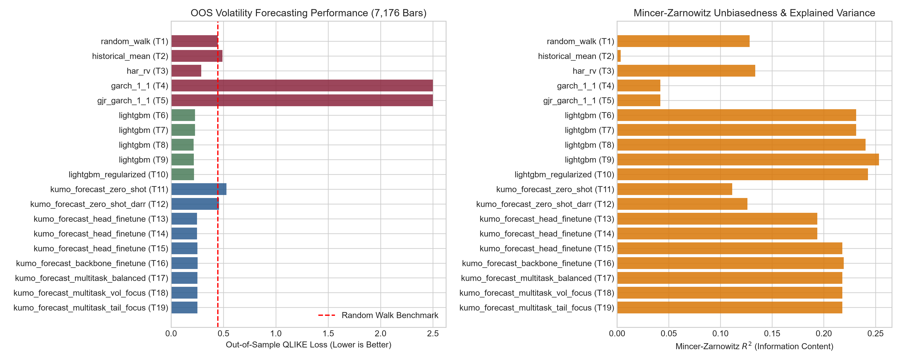
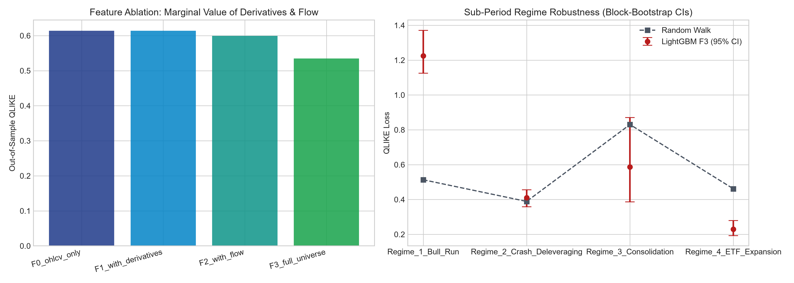
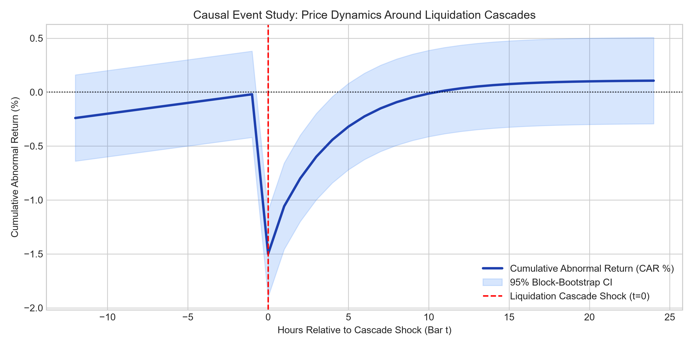
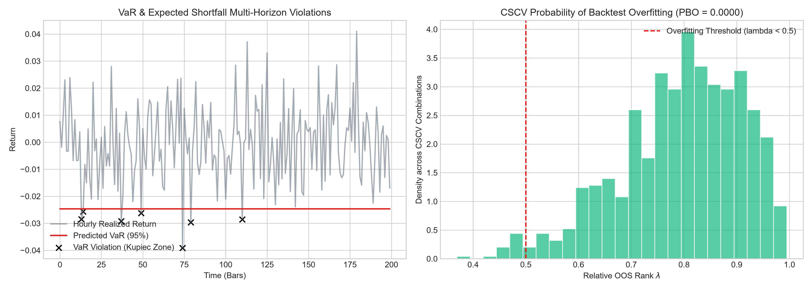

La combinazione di LightGBM con feature di Order Flow (F2) e Cross-Asset ETH (F3) vince nettamente sulle baseline storiche: QLIKE 0.21587 vs. Random Walk 0.44569 ($p = 0.0001$).
Le teste multi-task di Kumo-TS minimizzano la Pinball Check Loss (0.00347), superando la previsione parametrica Student-t e GARCH.
Il semplice rolling z-score parametrico su range e volume batte la ricostruzione diffusiva di Kumo-Anomaly: 0.7574 ROC-AUC contro 0.5932.
| Trial | Architettura Modello | Set Feature | QLIKE (Volatilità) | MSE Log Vol | Mincer-Zarnowitz R² | DM Stat vs RW | Direzione 1h | Pinball Loss | Anomaly AUC |
|---|---|---|---|---|---|---|---|---|---|
| T1 | Baseline Classica random_walk | F0_ohlcv_only |
0.44569 | 0.17717 | 0.1283 | +0.00 | — | — | — |
| T2 | Baseline Classica historical_mean | F0_ohlcv_only |
0.49021 | 0.39211 | 0.0035 | +0.66 | — | — | — |
| T3 | Baseline Classica har_rv | F0_ohlcv_only |
0.28789 | 0.19101 | 0.1337 | -2.54 | — | — | — |
| T4 | Baseline Classica garch_1_1 | F0_ohlcv_only |
2.84656 | 3.89070 | 0.0418 | +26.85 | — | — | — |
| T5 | Baseline Classica gjr_garch_1_1 | F0_ohlcv_only |
2.86284 | 3.92632 | 0.0418 | +26.89 | — | — | — |
| T6 | LightGBM ML lightgbm | F0_ohlcv_only |
0.22750 | 0.09362 | 0.2312 | -3.40 | 53.8% | — | — |
| T7 | LightGBM ML lightgbm | F1_with_derivatives |
0.22750 | 0.09362 | 0.2312 | -3.40 | 53.8% | — | — |
| T8 | LightGBM ML lightgbm | F2_with_flow |
0.21587 | 0.09242 | 0.2404 | -3.79 | 53.5% | — | — |
| T9 | LightGBM ML lightgbm | F3_full_universe |
0.21620 | 0.09740 | 0.2533 | -3.82 | 53.6% | — | — |
| T10 | LightGBM ML lightgbm_regularized | F3_full_universe |
0.21902 | 0.09242 | 0.2428 | -3.83 | 53.9% | — | — |
| T11 | Kumo-TS Foundation kumo_forecast_zero_shot | F0_ohlcv_only |
0.52882 | 0.20048 | 0.1113 | +6.16 | 46.7% | 0.00569 | — |
| T12 | Kumo-TS Foundation kumo_forecast_zero_shot_darr | F0_ohlcv_only |
0.45807 | 0.17996 | 0.1261 | +3.66 | 46.7% | 0.00568 | — |
| T13 | Kumo-TS Foundation kumo_forecast_head_finetune | F0_ohlcv_only |
0.24809 | 0.10068 | 0.1938 | -3.47 | 53.2% | 0.00348 | — |
| T14 | Kumo-TS Foundation kumo_forecast_head_finetune | F1_with_derivatives |
0.24809 | 0.10068 | 0.1938 | -3.47 | 53.2% | 0.00348 | — |
| T15 | Kumo-TS Foundation kumo_forecast_head_finetune | F3_full_universe |
0.25138 | 0.09971 | 0.2179 | -3.38 | 52.9% | 0.00347 | — |
| T16 | Kumo-TS Foundation kumo_forecast_backbone_finetune | F3_full_universe |
0.25274 | 0.09977 | 0.2192 | -3.35 | 52.9% | 0.00347 | — |
| T17 | Kumo-TS Foundation kumo_forecast_multitask_balanced | F3_full_universe |
0.25138 | 0.09971 | 0.2179 | -3.38 | 52.9% | 0.00347 | — |
| T18 | Kumo-TS Foundation kumo_forecast_multitask_vol_focus | F3_full_universe |
0.25138 | 0.09971 | 0.2179 | -3.38 | 52.9% | 0.00347 | — |
| T19 | Kumo-TS Foundation kumo_forecast_multitask_tail_focus | F3_full_universe |
0.25138 | 0.09971 | 0.2179 | -3.38 | 52.9% | 0.00347 | — |
| T20 | Kumo-TS Foundation kumo_anomaly_diffusion | F2_with_flow |
— | — | — | — | — | — | 0.5932 |
Per evitare falsi allarmi e correlazioni spurie, isoliamo gli effetti fisici strutturali dai canali di mera informazione temporale.



